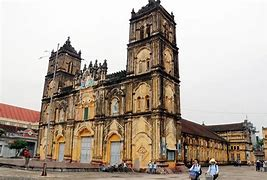

Vietnam was conventionally considered to be a Buddhist country.[18] Buddhism came to Vietnam as early as the second century AD through the North from China and via Southern routes from India. Mahayana Buddhism first spread from India via sea to Vietnam around 100 AD. During the 15th and 16th centuries, Theravāda became established as the state religion in Cambodia and also spread to Cambodians living in the Mekong Delta, replaced Mahayana. although some ethnic minorities (such as the Khmer Krom in the southern Delta region of Vietnam) adhere to the Theravada school.
Buddhism as practiced by the ethnic Vietnamese is mainly of the Mahayana school Today, more than half of the Vietnamese population, consider themselves as adherents of Mahayana Buddhism. Theravada and Hòa Hảo Buddhism are also present in significant numbers. Buddhist practice in Vietnam differs from that of other Asian countries, and does not contain the same institutional structures, hierarchy, or sanghas that exist in other traditional Buddhist settings. It has instead grown from a symbiotic relationship with Taoism, Chinese spirituality, and the indigenous Vietnamese religion, with the majority of Buddhist practitioners focusing on devotional rituals rather than meditation. The triple religion (Vietnamese: tam giáo), referring to the syncretic combination of Mahayana Buddhism, Confucianism, and Taoism, and Vietnamese folk religion (often assimilated), remain a strong influence on the beliefs and practices of the Vietnamese, even if the levels of formal membership in these religious communities may not reflect that influence. One of the most notable and universal spiritual practices common to Vietnamese is ancestor veneration. It is considered an expression of hiếu thảo (filial piety), a key virtue to maintain a harmonious society.
According to estimates by the Pew Research Center in 2010, most of the Vietnamese people practiced (exclusively) folk religions (45.3%). 16.4% of the population were Buddhists, 8.2% were Christians, and about 30% were unaffiliated to any religion.Officially, the Socialist Republic of Vietnam is an atheist state, as declared by its communist government. Although according to a 1999 census most Vietnamese list themselves as having no religious affiliation, religion, as defined by shared beliefs and practices, remains an integral part of Vietnamese life, dictating the social behaviours and spiritual practices of Vietnamese individuals in Vietnam and abroad.
These offerings and practices are done frequently during important traditional or religious celebrations (e.g., death anniversaries), the starting of a new business, or even when a family member needs guidance or counsel. According to statistics from the Government Committee for Religious Affairs, as of 2018, Buddhists account for 14.9% of the total population, Christians 8.5% (Catholics 7.4% & Protestants 1.1%), Hoahao Buddhists 1.5%, and Caodaism followers 1.2%.[1] Other religions include Hinduism, Islam, and Baháí Faith, representing less than 0.2% of the population. Folk religions (worship of ancestors, gods and goddesses), not included in government statistics, have experienced revival since the 1980s. Regardless of formal religious affiliation, it is very common to have an altar in the home and business where prayers are offered to their ancestors. Belief in ghosts and spirits is very common; many believe that the traditions are important links to culture and history and are enjoyable, while others believe that failing to perform the proper rituals for one's ancestors will literally cause them to become hungry ghosts (Vietnamese: ma đói).
The majority of Vietnamese do not follow any organized religion, instead participating in one or more practices of folk religions, such as venerating ancestors, or praying to deities, especially during Tết and other festivals. Folk religions were founded on endemic cultural beliefs that were historically affected by Confucianism and Taoism from China, as well as by various strands of Buddhism.
These three teachings or tam giáo were later joined by Christianity which has become a significant presence. Vietnam is also home of two indigenous religions: syncretic Caodaism and quasi-Buddhist Hoahaoism. Government statistics of the religion in Vietnam, are counts of members of religious organization recognized by the government.
Hence, this does not include people practicing folk religion, which is not recognized by government. Also, many people practice religion such as Buddhism without taking any membership of specific government organization. Official statistics from the 2019 Census, also not categorizing folk religion, indicates that Catholicism is the largest (organized) religion in Vietnam, surpassing Buddhism. While some other surveys reported 45-50 millions Buddhist living in Vietnam, the government statistics counts for 6.8 millions. It is the Buddhist Sangha of Vietnam, however, does not reports official statistics on its adherents. The great gaps in statistics on the number of Buddhist adherents is due to disagreement on the very criteria of what constitute a Buddhist. The decorations on Dong Son bronze drums, generally agreed to have ceremonial and possibly religious value, depict the figures of birds, leading historians to believe birds were objects of worship for the early Vietnamese. Dragons were another frequently recurring figure in Vietnamese art, arising from the veneration of Lạc Long Quân, a mythical dragon-king who is said to be the father of the Vietnamese people. The Golden Turtle God Kim Quy was said to appear to kings in times of crisis, notably to Lê Lợi, from whom he took the legendary sword Thuận Thiên after it had been dropped into Hoan Kiem Lake.